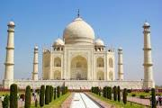

table of constant:- -introduction - History
notes:
1) it's wikipedia
2) short form
India (ISO: Bhārat), also known as the Republic of India (ISO: Bhārat Gaṇarājya),[18][e] is a country in South Asia. It is the seventh largest country by area and with more than 1.3 billion people, it is the second most populous country as well as the most populous democracy in the world. Bounded by the Indian Ocean on the south, the Arabian Sea on the southwest, and the Bay of Bengal on the southeast, it shares land borders with Pakistan to the west;[f] China, Nepal, and Bhutan to the northeast; and Bangladesh and Myanmar to the east. In the Indian Ocean, India is in the vicinity of Sri Lanka and the Maldives, while its Andaman and Nicobar Islands share a maritime border with Thailand and Indonesia.
The Indian subcontinent was home to the urban Indus Valley Civilisation of the 3rd millennium BCE. In the following millennium, the oldest scriptures associated with Hinduism began to be composed. Social stratification, based on caste, emerged in the first millennium BCE, and Buddhism and Jainism arose. Early political consolidations took place under the Maurya and Gupta empires; later peninsular Middle Kingdoms influenced cultures as far as Southeast Asia. In the medieval era, Judaism, Zoroastrianism, Christianity, and Islam arrived, and Sikhism emerged, all adding to the region's diverse culture. Much of the north fell to the Delhi Sultanate; the south was united under the Vijayanagara Empire. The economy expanded in the 17th century in the Mughal Empire. In the mid-18th century, the subcontinent came under British East India Company rule, and in the mid-19th under British Crown rule. A nationalist movement emerged in the late 19th century, which later, under Mahatma Gandhi, was noted for nonviolent resistance and led to India's independence in 1947.
In 2017, the Indian economy was the world's sixth largest by nominal GDP[19] and third largest by purchasing power parity.[15] Following market-based economic reforms in 1991, India became one of the fastest-growing major economies and is considered a newly industrialised country. However, it continues to face the challenges of poverty, corruption, malnutrition, and inadequate public healthcare. A nuclear weapons state and regional power, it has the second largest standing army in the world and ranks fifth in military expenditure among nations. India is a federal republic governed under a parliamentary system and consists of 29 states and 7 union territories. A pluralistic, multilingual and multi-ethnic society, it is also home to a diversity of wildlife in a variety of protected habitats.
"The earliest known human remains in South Asia date to about 30,000 years ago.[26] Nearly contemporaneous human rock art sites have been found in many parts of the Indian subcontinent, including at the Bhimbetka rock shelters in Madhya Pradesh.[27] After 6500 BCE, evidence for domestication of food crops and animals, construction of permanent structures, and storage of agricultural surplus, appeared in Mehrgarh and other sites in what is now Balochistan.[28] These gradually developed into the Indus Valley Civilisation,[29][28] the first urban culture in South Asia,[30] which flourished during 2500–1900 BCE in what is now Pakistan and western India.[31] Centred around cities such as Mohenjo-daro, Harappa, Dholavira, and Kalibangan, and relying on varied forms of subsistence, the civilization engaged robustly in crafts production and wide-ranging trade.[30]